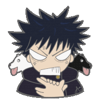
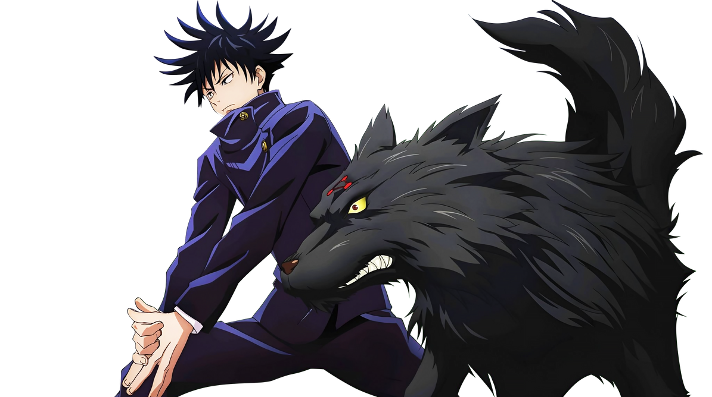

Edad
15 años

Cargando...

Hechicero de grado 2
El heredero de las Diez Sombras.
15 años
1,75 m
Hechicero de grado 2
Escuela Técnica de Magia de Tokio
Zen'in (heredero de las Diez Sombras)
Tōji Fushiguro
Megumi Fushiguro (伏黒恵) es un estudiante de la Escuela Técnica de Magia de Tokio y heredero de la Técnica de las Diez Sombras, la técnica familiar del clan Zen'in.
«Solo la realidad de la desigualdad existe por igual.»